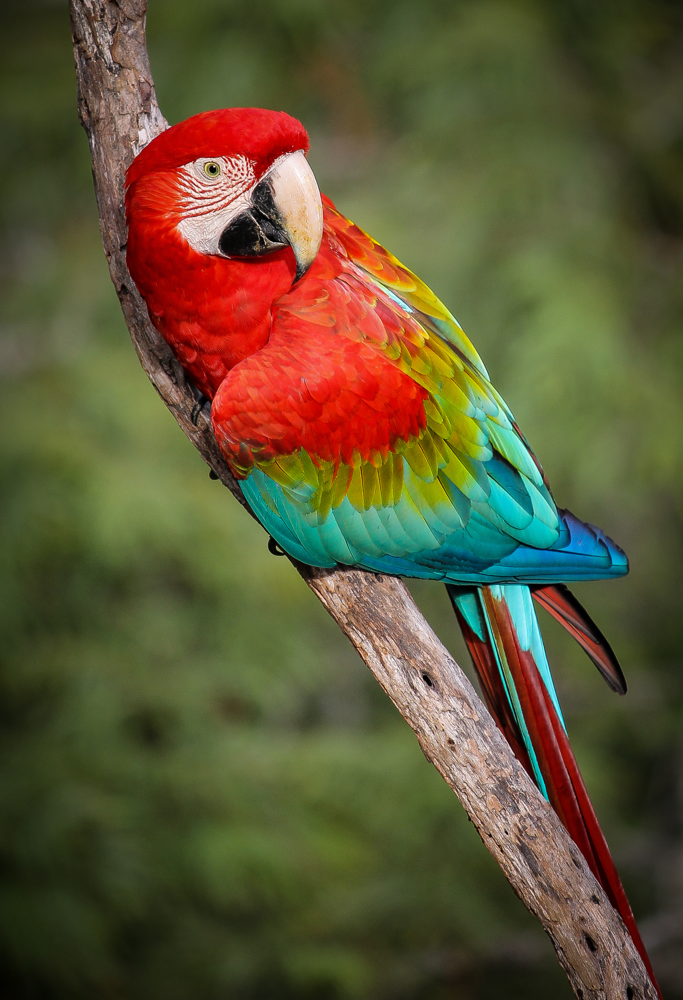

Sobre a ONG Protetores dos Animais
Localizada na cidade XPTO, a ONG Protetores dos Animais busca refugiar animais maltratados, doentes e machucados.
Nosso propósito é oferecer um bom ambiente aos animais, para que tenham uma boa recuperação e possam retornar à natureza.
Possuímos excelentes profissionais em nossa equipe, tanto veterinários quanto biólogos, para manter os animais bem alimentados, saudáveis e com seus viveiros adequados. Além de voluntários, que auxiliam na manutenção de nossas instalações e na alimentação dos animais
Local da ONG
Nosso local se encontra na cidade XPTO, na Rua XPTO3, número 999. É uma fazenda com diversos viveiros para todos os tipos de animais
Animais
Aceitamos diversos tipos de animais em nossa ONG, possuindo o ambiente e espaço adequado para eles, como por exemplo:
- Cães
- Gatos
- Felinos
- Aves
- Répteis
- Peixes
- Entre outros